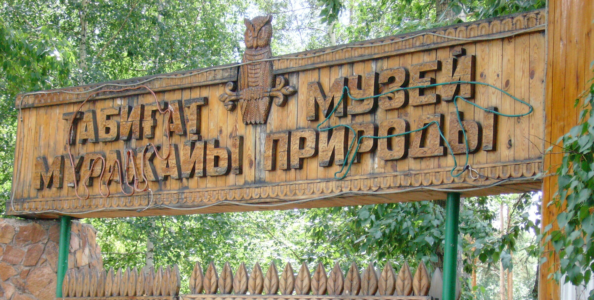
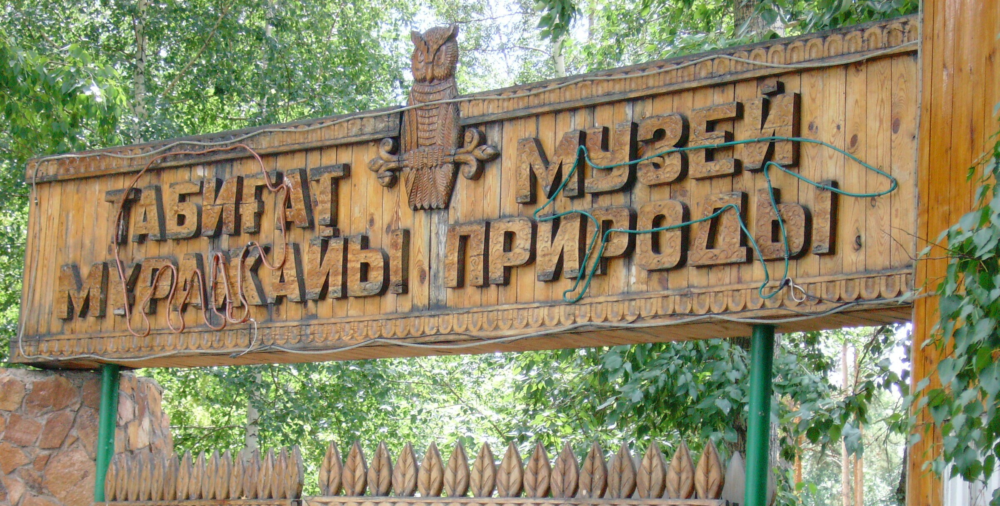

In this section, we have collected the best photos and videos of Burabay's nature, so you can get inspired before your trip or simply enjoy the beauty of your hometown. And if you have already visited this place, you will find familiar places and memories.


 
